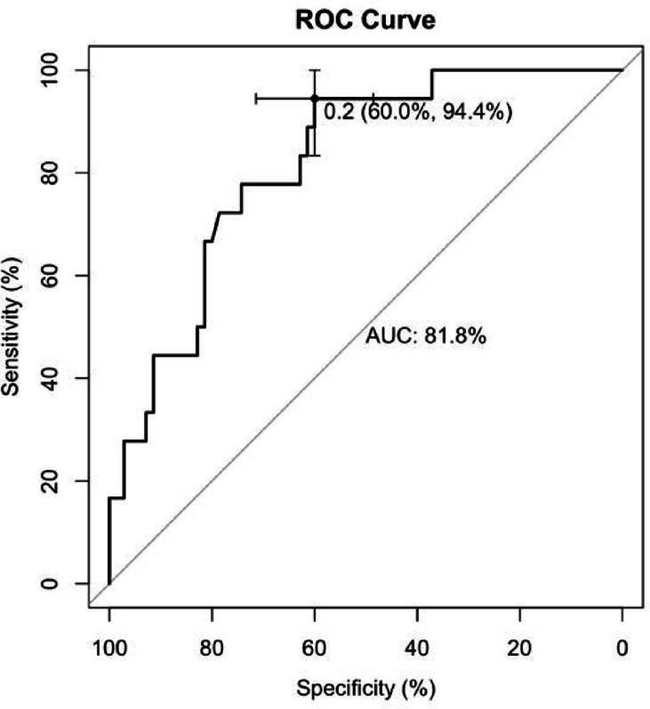
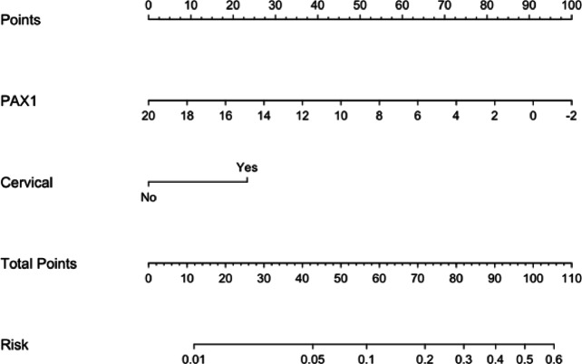
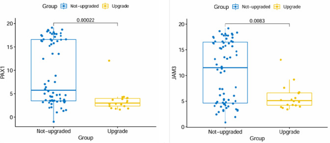
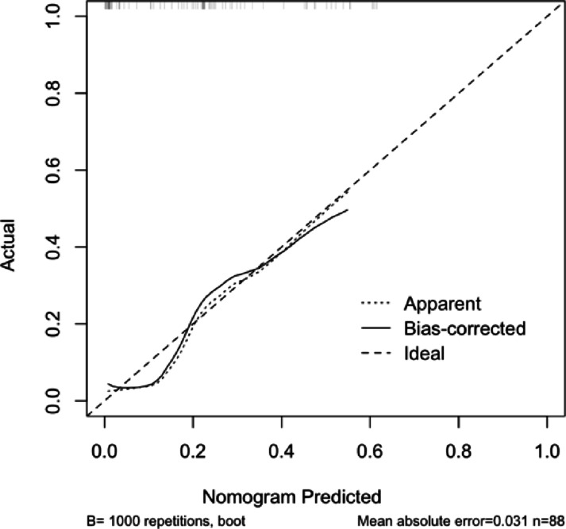
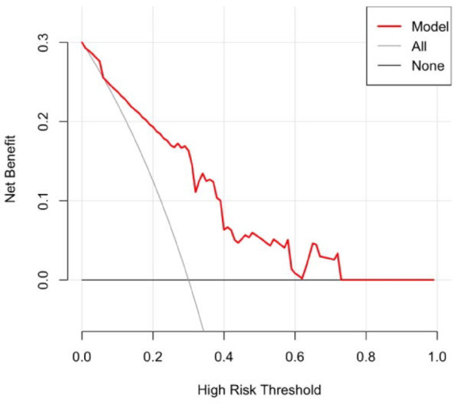

1Background & Objective
- Problem: colposcopy biopsy vs conization pathology often differ — upgrading 23.1%, downgrading 33.6%.
- Consequences: underdiagnosis delays treatment; overdiagnosis causes unnecessary surgery (pregnancy risks).
- Objective: use non-invasive PAX1/JAM3 methylation to predict pathological upgrading before conization.
2Study Design & Cohort
549
collected
461
excluded
88
analyzed
23.1%
upgrade (lit.)
33.6%
downgrade
Dec 2020→
colposcopy + methylation→
Apr 2022 · conization
Colposcopy biopsy+
Methylation (ΔCt PAX1/JAM3)+
Conization pathology
- Setting: Zhejiang Provincial People's Hospital, Dec 2020 – Apr 2022; two pathologists.
- Upgrading: CIN1→CIN2/3+ · CIN2→CIN3/cancer · CIN3→cancer.
- Assay: CISCER® real-time PCR kit (NMPA III), GAPDH internal control.
- Analysis: univariate + multivariate logistic; ROC/Youden; calibration + DCA.
- Pathology: 2020 WHO; highest grade; two pathologists.
| Exclusion criteria |
|---|
| ① CDB cancer / AIS / adenocarcinoma |
| ② conization elsewhere / unable |
| ③ lost to follow-up |
| ④ prior cervical treatment / hysterectomy / CRT |
CDB CIN1→CIN2 / CIN3 / cancer
CDB CIN2→CIN3 / cancer
CDB CIN3→cervical cancer
Upgrading = conization pathology one grade higher than colposcopy biopsy (2020 WHO).
3Prediction Model — ROC
0.818
AUC (0.720–0.916)
94.4%
Specificity
60%
Sensitivity

Fig. 4 ROC — ΔCt PAX1 + cervical canal lesions predict upgrading; good discrimination.

Fig. 3 Logistic prediction model components.
ΔCt < 4.34
PAX1 cut-off (max Youden)
lower ΔCt PAX1 → higher upgrading risk
lower ΔCt PAX1 → higher upgrading risk
- Model: ΔCt PAX1 + cervical canal lesions; independent predictors on multivariate analysis.
4Model in Practice
Step 1
Measure ΔCt PAX1 pre-op
→
Step 2
ΔCt < 4.34 → upgrading likely
→
Step 3
Plan wider / deeper conization
0.818
Model discrimination
Se 60% · Sp 94.4% at max Youden · OR 0.035 (P=0.02)
Se 60% · Sp 94.4% at max Youden · OR 0.035 (P=0.02)
Cut-off ΔCt PAX1 = 4.34 defined by maximizing Youden index.
- ΔCt ≥ 4.34: upgrading less likely — may defer or narrow surgery.
- Goal: right-size treatment, avoid under- and over-treatment.
- Any candidate for conization with pre-op methylation can be stratified.
4Independent Risk Factors
ΔCt PAX1
OR 0.784
95% CI 0.644–0.956 · P=0.016
Cervical canal lesion
OR 3.469
95% CI 1.014–11.870 · P=0.048

Fig. 2 ΔCt PAX1/JAM3 — not-upgrade group significantly higher (P<0.01).
5Model Validation

Fig. 5 Calibration — mean abs error 0.031 (bootstrap ×1000).

Fig. 6 DCA — net benefit across 0–0.3 thresholds.
- Discrimination: AUC 0.818 — good ability to distinguish upgrading.
- Calibration & utility: predicted vs actual agree (err 0.031); DCA favors model over treat-all/none.
Well-calibrated and clinically useful across decision thresholds.